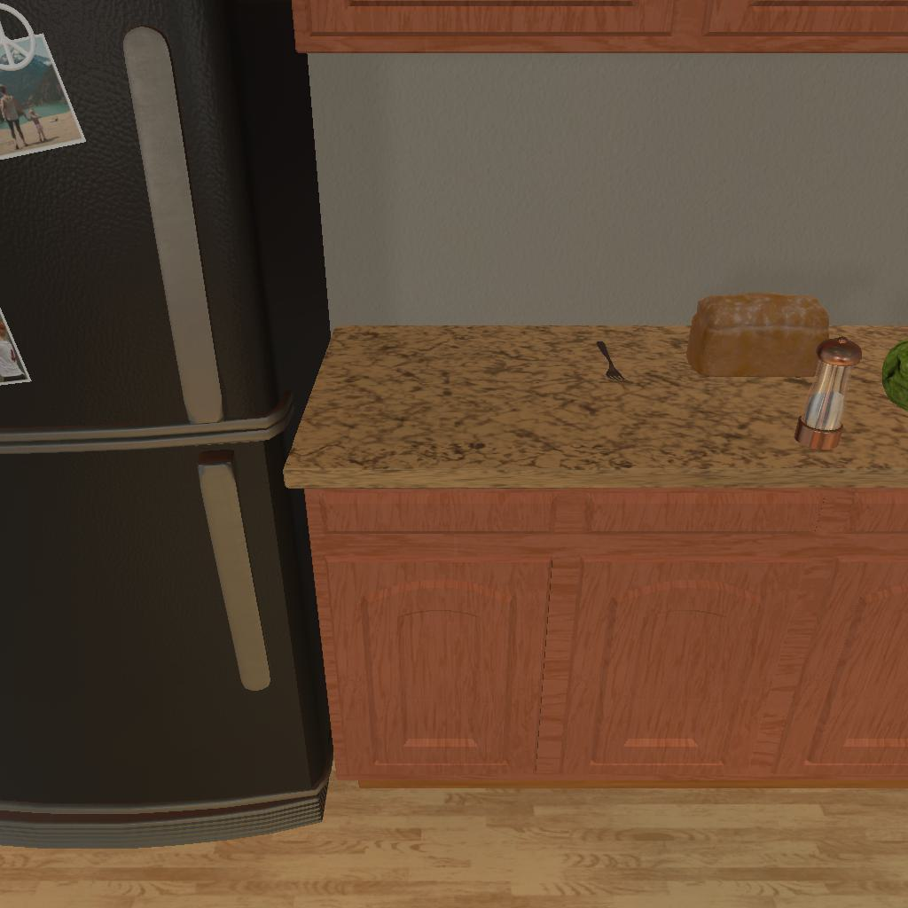

---------------------------------------------------------task: 15---------------------------------------------------------
--------------------------------------------------------------------------------------------------------------------------------------------------------------------
--------------------------------------------------------------------------------------------------------------------------------------------------------------------
Step:--------------------------------------------------------------------------5-------------------------------------------------------------------------------
----------------------------------------
VLM Prompt:
Image1:
Image2:
**Instruction**
1. Analyze the provided images to identify all visible household objects and compare the difference between images (e.h. whether the object is opened or not and taken on hand or not), focusing on those relevant to the task description "cool some mug and put it in coffeemachine."
2. Use the analysis of images and the task hint "The agent must find an object of the desired type, pick it up, go to a fridge, cool the object with the fridge, then find the correct location to place it, and put it down there. The agent does not need to use the fridge button or open the fridge to cool the object, and the agent just needs to do action that is "cool the object with the fridge"." to answer the question: what is the most reasonable action in the choices for the task description "cool some mug and put it in coffeemachine"?
3. Decide and write the answer using the template: The answer is: (i): , where i is the real number. If there is no desired object in images, search every place based on **Initial Observation** to find the object. And if no one is exactly correct, choose a similar answer.
**Initial Observation**
You are in the middle of a room. Looking quickly around you, you can see cabinet (1-15), fridge (1), countertop (1-4), drawer (1-4), microwave (1), toaster (1), coffeemachine (1), garbagecan (1), sink (1), stoveburner (1-3), sinkbasin (1)
**Answer Choices**
(1): go to cabinet 1
(2): go to fridge 1
(3): go to countertop 1
(4): go to cabinet 5
(5): go to cabinet 6
(6): go to cabinet 7
(7): go to drawer 1
(8): go to drawer 2
(9): go to cabinet 8
(10): go to drawer 3
(11): go to cabinet 9
(12): go to cabinet 10
(13): go to drawer 4
(14): go to microwave 1
(15): go to cabinet 11
(16): go to toaster 1
(17): go to cabinet 12
(18): go to cabinet 13
(19): go to cabinet 14
(20): go to cabinet 15
(21): go to countertop 2
(22): go to coffeemachine 1
(23): go to garbagecan 1
(24): go to countertop 3
(25): go to countertop 4
(26): go to sink 1
(27): go to stoveburner 1
(28): go to stoveburner 2
(29): go to stoveburner 3
(30): go to sinkbasin 1
(31): open cabinet 4
(32): close cabinet 4
(33): examine cabinet 4
**Answer**
Let's think step by step by following the instructions.
----------------------------------------
----------------------------------------
Original Response:
First, we need to identify all visible household objects in the images and their state:
Image1:
- Cabinet (seems like cabinet 4 from the initial observation list) is open.
Image2:
- Fridge (fridge 1) is closed.
- Countertop 1 has a bread loaf and a salt shaker.
- Cabinet (possibly cabinet 1, 2, or 3 from initial observation) is closed.
Now, according to the task "cool some mug and put it in coffeemachine," we need to find a mug, cool it in the fridge, and then place it in the coffeemachine.
From the provided images and initial observation, we cannot see any mugs, so we need to search the cabinets and drawers since those are the most likely places to find a mug.
We can rule out the need to go to the fridge immediately, as we don't have the mug yet to cool. Also, we don't need to go to places like the garbage can, sink, stove burner, or sink basin, as those are not relevant to finding a mug.
Given the options and considering we don't see the mug in the open cabinet in Image1 (cabinet 4) or on the countertops, the most logical next step would be to search other cabinets.
The answer is: (1): go to cabinet 1. If the mug is not there, continue searching cabinets in numerical order or as close to it as possible until the mug is found. Once found, the next step would be to go to the fridge to cool the mug and then to the coffeemachine to place it there.
----------------------------------------
----------------------------------------
>>> Refine Original VLM Response and Get Pure Action: go to cabinet 1
----------------------------------------
-----------------------------------------------------------------
Running time: 12.72331428527832 seconds
Total Money: 6.934670000000004
-----------------------------------------------------------------
-----------------------------------------------------------------
Text Observation:You arrive at loc 0. The cabinet 1 is closed.
-----------------------------------------------------------------
UNSUCCEED